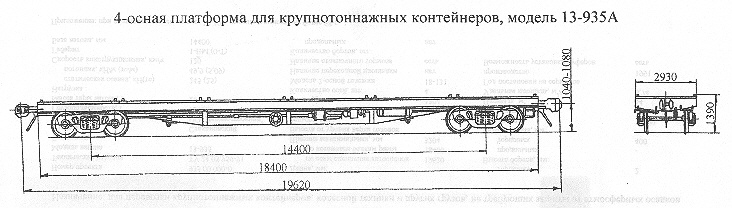

Назначение: для перевозки крупнотоннажных контейнеров
Параметры
| Номер проекта | 935.00.000-0 |
| Технические условия | ТУЗ.05 Украина 005-93 |
| Модель вагона | 13-935А |
| Тип вагона | |
| Изготовитель | Стахановский ПО "Вагоностроения" |
| Грузоподъемность, т | 71 |
| Масса тары вагона, т | 23 |
| Нагрузка: статическая осевая, кН(тс) |
230,3(23,5) |
| погонная, кН/м(тс/м) | 46,95(4,79) |
| Скорость конструкционная, км/ч | 120 |
| Габарит | 1-ВМ(0-Т) |
| База вагона, мм | 14400 |
| Длина, мм: по осям сцепления автосцепок |
19620 |
| по концевым балкам рамы | 18400 |
| Ширина максимальная, мм | 2930 |
| Высота от уровня верха головок рельсов, мм: максимальная |
1390 |
| до уровня пола | 1304 |
| Количество осей, шт. | 4 |
| Модель 2-осной тележки | 18-100 |
| Наличие переходной площадки | нет |
| Наличие стояночного тормоза | есть |
| Количество бортов, шт.: продольных |
нет |
| торцовых | нет |
| Количество упоров для крепления контейнеров, шт.: опрокидывающихся |
24 |
| стационарных | |
| Площадь, м² | 54 |
| Удельная площадь, м²/т | 0,76 |
| Год постановки на серийное производство | 1993 |
| Возможность установки буфера | есть |